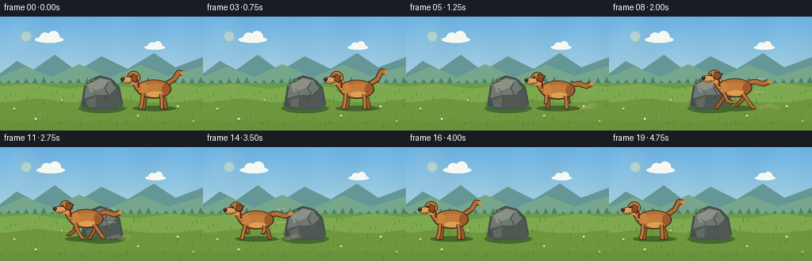
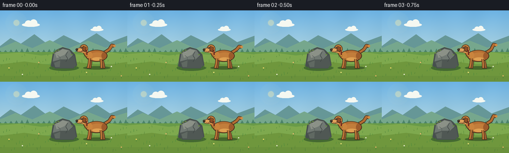

CODING AGENTS AS PIXEL WORLD MODELS
traex/GPT-5.6-Sol · dynamic_spatial_relationship_0004
点击播放 · 原生 RGB 像素
逐轮保存的候选
回放视频、检查图与代码变化。
每份候选均可单独播放。实际图片检查记录在下方工具轨迹中。
候选 01播放与检查图
点击播放 · 原生 RGB 像素


展开代码变化
--- 上一保存版本
+++ 本次保存版本
@@ -0,0 +1,285 @@
+"""Programmatic text-to-video rendering for the supplied PixelWorld prompt.
+
+The scene is rendered as a soft, hand-painted 2-D animation. A fixed camera
+and a conspicuous central rock make the requested changing spatial relation
+unambiguous.
+"""
+
+from pathlib import Path
+import math
+import numpy as np
+from PIL import Image, ImageDraw, ImageFilter
+
+import artifact_io
+
+
+W, H, N = 256, 144, 20
+S = 4 # supersampling for clean silhouettes
+
+
+def sc(v):
+ return int(round(v * S))
+
+
+def box(b):
+ return tuple(sc(v) for v in b)
+
+
+def pts(p):
+ return [(sc(x), sc(y)) for x, y in p]
+
+
+def ellipse(d, b, fill, outline=None, width=1):
+ d.ellipse(box(b), fill=fill, outline=outline, width=max(1, sc(width)))
+
+
+def polygon(d, p, fill):
+ d.polygon(pts(p), fill=fill)
+
+
+def line(d, p, fill, width=1, joint="curve"):
+ d.line(pts(p), fill=fill, width=max(1, sc(width)), joint=joint)
+
+
+def make_background(frame):
+ """Sky, distant landscape, and a detailed but restrained meadow."""
+ yy = np.linspace(0, 1, H * S)[:, None, None]
+ top = np.array([107, 177, 226], dtype=float)
+ horizon = np.array([221, 235, 220], dtype=float)
+ rgb = top[None, None, :] * (1 - yy) + horizon[None, None, :] * yy
+ rgb = np.repeat(rgb, W * S, axis=1)
+ # Very subtle paper-like variation, fixed in screen space to avoid flicker.
+ gy, gx = np.mgrid[0:H * S, 0:W * S]
+ variation = 1.6 * np.sin(gx / 43.0) + 1.1 * np.sin((gx + gy) / 71.0)
+ rgb = np.clip(rgb + variation[..., None], 0, 255).astype(np.uint8)
+ im = Image.fromarray(rgb, "RGB")
+ d = ImageDraw.Draw(im)
+
+ # Sun glow.
+ glow = Image.new("RGBA", im.size, (0, 0, 0, 0))
+ gd = ImageDraw.Draw(glow)
+ for r, a in [(22, 7), (15, 10), (8, 18)]:
+ ellipse(gd, (33-r, 25-r, 33+r, 25+r), (255, 245, 181, a))
+ ellipse(gd, (27, 19, 39, 31), (255, 241, 172, 105))
+ im = Image.alpha_composite(im.convert("RGBA"), glow).convert("RGB")
+ d = ImageDraw.Draw(im)
+
+ # Slow clouds add life without changing the camera or spatial reference.
+ drift = frame * 0.16
+ for cx, cy, scale_, alpha in [(62 + drift, 25, 1.0, 205), (195 + drift*.55, 36, .72, 175)]:
+ col = (245, 248, 241)
+ ellipse(d, (cx-18*scale_, cy, cx+18*scale_, cy+8*scale_), col)
+ ellipse(d, (cx-12*scale_, cy-5*scale_, cx+2*scale_, cy+8*scale_), col)
+ ellipse(d, (cx-2*scale_, cy-7*scale_, cx+13*scale_, cy+8*scale_), col)
+
+ # Layered hills and tree line.
+ polygon(d, [(0, 72), (21, 56), (42, 67), (69, 48), (97, 69),
+ (128, 50), (161, 66), (194, 46), (221, 64), (256, 51), (256, 91), (0, 91)],
+ (102, 151, 151))
+ polygon(d, [(0, 76), (31, 63), (65, 76), (100, 60), (137, 77),
+ (177, 61), (212, 75), (256, 62), (256, 94), (0, 94)],
+ (118, 167, 141))
+ # Tiny distant trees.
+ for i in range(0, 258, 11):
+ h = 4 + (i * 17 % 6)
+ polygon(d, [(i-4, 85), (i, 85-h), (i+4, 85)], (75, 130, 105))
+
+ # Meadow bands.
+ d.rectangle((0, sc(84), sc(W), sc(H)), fill=(105, 155, 72))
+ polygon(d, [(0, 88), (39, 85), (83, 91), (126, 86), (172, 90),
+ (218, 84), (256, 89), (256, 108), (0, 108)], (126, 169, 78))
+ polygon(d, [(0, 109), (49, 103), (99, 110), (153, 104), (206, 111),
+ (256, 104), (256, 144), (0, 144)], (111, 151, 61))
+
+ # Texture strokes and a few flowers; deterministic and consistent.
+ for i in range(86):
+ x = (i * 47 + 19) % 256
+ y = 92 + ((i * 29 + 7) % 50)
+ h = 2 + (i % 5)
+ lean = math.sin(i * 1.73 + frame * .07) * .7
+ col = (72 + i % 18, 124 + i % 24, 53 + i % 10)
+ line(d, [(x, y), (x + lean, y-h)], col, .65)
+ for x, y, c in [(18, 116, (244,220,104)), (45,129,(238,238,210)),
+ (78,105,(238,188,109)), (174,125,(239,226,122)),
+ (224,113,(234,235,212)), (244,132,(237,184,103))]:
+ line(d, [(x, y+5), (x, y)], (75, 126, 56), .7)
+ ellipse(d, (x-1.2, y-1, x+1.2, y+1.2), c)
+ return im
+
+
+def draw_rock(im):
+ """The fixed central reference object, with a strong readable silhouette."""
+ d = ImageDraw.Draw(im)
+ # Contact shadow and small tufts anchor it to the ground.
+ ellipse(d, (99, 110, 158, 122), (68, 105, 49))
+ polygon(d, [(102,112),(106,87),(114,79),(126,74),(140,78),(151,89),
+ (155,111),(148,117),(111,117)], (71, 79, 78))
+ polygon(d, [(106,103),(109,87),(126,77),(139,80),(146,91),(137,99),
+ (121,99)], (112, 120, 114))
+ polygon(d, [(106,103),(121,99),(137,99),(149,91),(153,111),(147,116),
+ (112,116)], (80, 88, 84))
+ polygon(d, [(111,87),(126,78),(137,81),(129,90),(114,96)], (139, 145, 135))
+ polygon(d, [(109,106),(121,101),(120,114),(111,114)], (96, 105, 98))
+ # Cracks and moss distinguish this from an arbitrary mound.
+ line(d, [(136,83),(132,91),(136,97),(132,104)], (64, 70, 69), 1.05)
+ line(d, [(116,91),(121,95),(120,101)], (83, 90, 87), .8)
+ line(d, [(109,87),(114,84),(119,84)], (159, 165, 151), .75)
+ for x, y in [(108,86),(112,82),(117,80),(144,89)]:
+ ellipse(d, (x-2, y-1, x+2.4, y+1.3), (101, 132, 69))
+ # Foreground grass partially overlaps the rock base.
+ for x, h, lean in [(103,7,-2),(108,5,1),(149,7,2),(154,6,-1),(158,4,1)]:
+ line(d, [(x,118),(x+lean,118-h)], (69, 119, 48), .8)
+
+
+def dog_position(f):
+ """Long holds at either side with a smoothly accelerating central run."""
+ if f <= 4:
+ return 194.0
+ if f >= 16:
+ return 57.0
+ t = (f - 4) / 12.0
+ e = t * t * (3 - 2 * t) # smoothstep
+ return 194.0 + (57.0 - 194.0) * e
+
+
+def draw_dust(im, f, x, running):
+ if not running:
+ return
+ d = ImageDraw.Draw(im, "RGBA")
+ speed = dog_position(max(0, f-1)) - x
+ strength = min(1.0, speed / 12.0)
+ # Dust trails behind a left-running animal (to its right).
+ for j in range(5):
+ age = j + .4
+ cx = x + 25 + age * (4.0 + strength * 2)
+ cy = 116 - ((f * 7 + j * 5) % 4) - j * .35
+ r = 1.3 + j * .55
+ ellipse(d, (cx-r*1.5, cy-r, cx+r*1.5, cy+r),
+ (202, 181, 121, int(82 - j*10)))
+ if speed > 7:
+ for dy, length in [(-27, 10), (-19, 7), (-10, 12)]:
+ line(d, [(x+26, 105+dy), (x+26+length, 105+dy)],
+ (236, 225, 184, 105), 1)
+
+
+def leg(d, hip, knee, foot, far=False):
+ outline = (72, 47, 29)
+ fur = (151, 94, 48) if far else (187, 119, 55)
+ line(d, [hip, knee, foot], outline, 5.2)
+ line(d, [hip, knee, foot], fur, 3.3)
+ # dark paw pad silhouette, then a small warm top
+ line(d, [(foot[0]-2.2, foot[1]), (foot[0]+2.5, foot[1])], outline, 2.5)
+ line(d, [(foot[0]-1.5, foot[1]-.5), (foot[0]+1.8, foot[1]-.5)], fur, 1.2)
+
+
+def draw_dog(im, f):
+ d = ImageDraw.Draw(im)
+ x = dog_position(f)
+ running = 5 <= f <= 15
+ stopping = f in (16,)
+ phase = (f - 5) * 1.72
+ bounce = (-abs(math.sin(phase)) * 3.0 + 1.2) if running else math.sin(f*.7)*.3
+ ground = 116.0
+ cy = 91.5 + bounce
+
+ # Ground shadow broadens when the dog is close to the turf.
+ air = max(0, ground - (cy + 24))
+ ellipse(d, (x-27+air*.2, 112.5, x+28-air*.2, 119.5), (68, 102, 43))
+
+ # Tail behind body: raised while alert, streaming while running.
+ tail_root = (x+17, cy-7)
+ if running:
+ tail_path = [tail_root, (x+26, cy-8), (x+36, cy-5), (x+43, cy-8)]
+ else:
+ wag = math.sin(f*1.55)*2
+ tail_path = [tail_root, (x+26, cy-13), (x+31, cy-21+wag), (x+36, cy-20+wag)]
+ line(d, tail_path, (68, 45, 28), 7.0)
+ line(d, tail_path, (178, 109, 51), 4.8)
+ ellipse(d, (tail_path[-1][0]-2.6, tail_path[-1][1]-2.6,
+ tail_path[-1][0]+2.6, tail_path[-1][1]+2.6), (207, 139, 67))
+
+ # Gait endpoints. The two pairs counter-swing for a recognizable gallop.
+ if running:
+ g = math.sin(phase)
+ g2 = math.sin(phase + math.pi)
+ lift1 = max(0, math.cos(phase)) * 8
+ lift2 = max(0, math.cos(phase + math.pi)) * 8
+ # far legs first
+ leg(d, (x-11,cy+7), (x-12-5*g2,cy+16), (x-13-12*g2,ground-lift2), True)
+ leg(d, (x+12,cy+7), (x+14+5*g,cy+15), (x+14+13*g,ground-lift1), True)
+ else:
+ leg(d, (x-11,cy+7), (x-12,cy+16), (x-13,ground), True)
+ leg(d, (x+11,cy+7), (x+14,cy+16), (x+15,ground), True)
+
+ # Body outline and layered fur.
+ ellipse(d, (x-22, cy-12, x+22, cy+12), (68, 44, 27))
+ ellipse(d, (x-20.5, cy-11, x+20.5, cy+10.5), (181, 111, 51))
+ ellipse(d, (x-14, cy-7, x+18, cy+9.5), (194, 125, 59))
+ ellipse(d, (x-9, cy+3, x+12, cy+10), (223, 160, 82))
+ # Shoulder and rump modeling.
+ ellipse(d, (x-19, cy-8, x-8, cy+7), (202, 132, 61))
+ ellipse(d, (x+10, cy-7, x+20, cy+7), (157, 91, 43))
+
+ # Near legs on top of torso.
+ if running:
+ g = math.sin(phase)
+ g2 = -g
+ lift1 = max(0, math.cos(phase + math.pi*.18)) * 8
+ lift2 = max(0, math.cos(phase + math.pi*1.18)) * 8
+ leg(d, (x-14,cy+6), (x-15-6*g,cy+16), (x-15-14*g,ground-lift1), False)
+ leg(d, (x+10,cy+7), (x+11+6*g2,cy+16), (x+11+14*g2,ground-lift2), False)
+ else:
+ # Stable, widely separated stance in the two hold sections.
+ leg(d, (x-14,cy+5), (x-15,cy+16), (x-17,ground), False)
+ leg(d, (x+9,cy+6), (x+10,cy+16), (x+10,ground), False)
+
+ # Neck slopes into a distinctly canine head, always facing left.
+ polygon(d, [(x-18,cy-7),(x-25,cy-16),(x-29,cy-9),(x-22,cy+3)], (72, 45, 27))
+ polygon(d, [(x-18.5,cy-6),(x-24.5,cy-15),(x-27.5,cy-9),(x-21,cy+2)], (190, 118, 52))
+ # Head and brow.
+ ellipse(d, (x-34, cy-23, x-17, cy-6), (67, 43, 27))
+ ellipse(d, (x-33, cy-22, x-18, cy-7), (196, 126, 59))
+ ellipse(d, (x-34, cy-13, x-17, cy-6), (218, 151, 78))
+ # Long muzzle to the left, with cream underside.
+ ellipse(d, (x-41, cy-16, x-25, cy-7), (69, 44, 29))
+ ellipse(d, (x-40, cy-15.2, x-26, cy-7.8), (224, 162, 91))
+ ellipse(d, (x-42, cy-15, x-37, cy-10), (47, 38, 31))
+ ellipse(d, (x-40.6, cy-14.6, x-38.2, cy-12.4), (91, 76, 60))
+ # Ear swept back during the run.
+ if running:
+ polygon(d, [(x-25,cy-21),(x-15,cy-18),(x-20,cy-9),(x-27,cy-12)], (72, 44, 28))
+ polygon(d, [(x-24.5,cy-19.8),(x-17,cy-17.7),(x-21,cy-11),(x-26,cy-13)], (139, 77, 39))
+ else:
+ polygon(d, [(x-27,cy-20),(x-20,cy-17),(x-22,cy-7),(x-29,cy-11)], (72, 44, 28))
+ polygon(d, [(x-26,cy-19),(x-21,cy-16.5),(x-23,cy-9),(x-28,cy-12)], (142, 78, 38))
+ # Eye, highlight, smile, and collar make the subject expressive and legible.
+ ellipse(d, (x-31.8, cy-18.2, x-28.5, cy-14.8), (39, 31, 24))
+ ellipse(d, (x-31.0, cy-17.6, x-30.0, cy-16.6), (246, 237, 201))
+ line(d, [(x-36,cy-9.5),(x-31,cy-8.5),(x-29,cy-10)], (82, 47, 31), .65)
+ line(d, [(x-20,cy-12),(x-19,cy+1)], (112, 36, 31), 2.2)
+ ellipse(d, (x-20.8,cy-2,x-17.8,cy+1), (232, 184, 61), (85,58,29), .5)
+
+
+def make_frame(f):
+ im = make_background(f)
+ draw_rock(im)
+ x = dog_position(f)
+ draw_dust(im, f, x, 5 <= f <= 15)
+ draw_dog(im, f)
+
+ # Gentle foreground vignette/depth, kept subtle enough not to hide action.
+ overlay = Image.new("RGBA", im.size, (0, 0, 0, 0))
+ od = ImageDraw.Draw(overlay)
+ od.rectangle((0, sc(132), sc(W), sc(H)), fill=(35, 72, 29, 18))
+ im = Image.alpha_composite(im.convert("RGBA"), overlay).convert("RGB")
+ return np.asarray(im.resize((W, H), Image.Resampling.LANCZOS), dtype=np.uint8)
+
+
+def main():
+ frames = np.stack([make_frame(f) for f in range(N)], axis=0)
+ assert frames.shape == (20, 144, 256, 3) and frames.dtype == np.uint8
+ artifact_io.save(frames, Path(__file__).resolve().parent)
+
+
+if __name__ == "__main__":
+ main()
可观测工具轨迹
实际执行的命令与返回图片。
命令 1exit 0
/bin/bash -lc "cat prompt.txt && printf '\\n--- GENERATION_RULES.md ---\\n' && cat GENERATION_RULES.md"
命令 2exit 0
/bin/bash -lc "cat task_spec.json && printf '\\n--- FILES ---\\n' && find . -maxdepth 2 -type f -printf '%p\\n' | sort"
命令 3exit 0
/bin/bash -lc 'cat artifact_io.py'
命令 4exit 0
/bin/bash -lc 'python generate.py'
命令 5exit 0
/bin/bash -lc "python - <<'PY'
from pathlib import Path
import numpy as np
from PIL import Image
p=np.load('pixels.npz')['pixels']
print('packed tensor:', p.shape, p.dtype)
files=sorted(Path('frames').glob('*.png'))
print('frame files:',len(files), Image.open(files[0]).mode, Image.open(files[0]).size)
# Decode and report temporal change magnitude / exact duplicate holds.
a=np.stack([np.array(Image.open(x)) for x in files])
d=np.abs(np.diff(a.astype(np.int16),axis=0))
print('RGB stack:',a.shape,a.dtype,'range',int(a.min()),int(a.max()))
print('mean frame-to-frame absolute changes:')
print(np.round(d.mean(axis=(1,2,3)),2).tolist())
print('artifacts:')
for x in ['pixels.npz','inspection.png','transition_check.png','index.html','generate.py']:
q=Path(x); print(x,q.stat().st_size)
PY
python -m py_compile generate.py
"保存候选 1 份；完成命令 5 次；可验证图片返回 0 张。原始 API 响应与完整日志保留在本地。